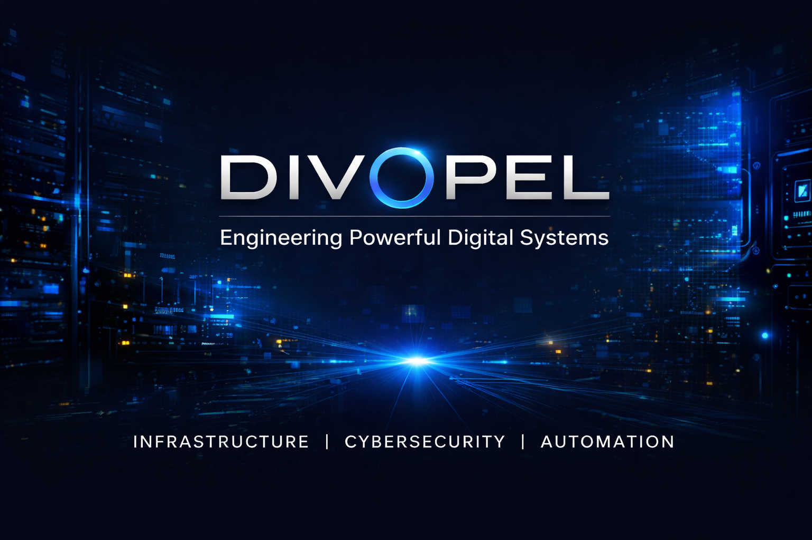

Bienvenue sur Divopel
Divopel est une entreprise spécialisée dans les solutions technologiques et l’optimisation des systèmes informatiques. Nous combinons puissance, sécurité et innovation pour vos projets numériques.
Découvrir nos projets